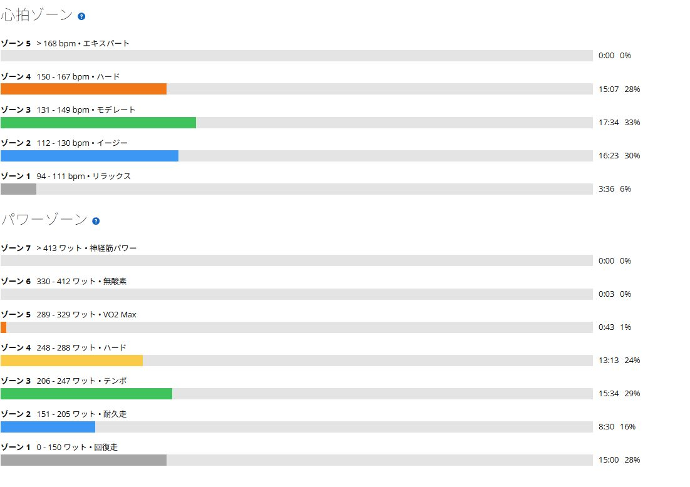

30℃の部屋でSST。脚は元気なのに息が先に終わった
前日は唐沢から琴平へ回り、最後のストレートまで踏んでTSS124.1。膝の違和感は消えていて、今日も脚はそこまで重くなかった。予定はローラーでSST20分×2だった。
ただし部屋は平均30.4℃、最高31℃。走り出せば何とかなると思っていたが、1本目を終えたあたりから話が変わった。脚ではなく息が先に苦しくなった。

前日の高負荷後でも脚は動いた
前日は唐沢・琴平の高負荷ライドだった。TSS124.1なので疲労が残っていてもおかしくないが、膝に問題はなく、脚の感触も悪くなかった。だから予定どおりSST20分×2を始めた。
全体は53分で平均198W、NP219W、IF0.798、TSS55.8。メニューは未完遂だが、回復走と呼ぶにはしっかり負荷が入っている。
1本目は20分252W
1本目は20分で平均252W。予定の255Wにほぼ近く、平均心拍147bpm、平均ケイデンス91rpmだった。ペダリングも大きく崩れず、終わった時点では2本目も続けられると思っていた。
暑さは感じていたが、脚はまだ動く。ここまでは普段のSSTと大きく変わらなかった。
2本目は10分235Wで終了
2本目は10分で平均235W。1本目より17W低いのに、体感はこちらの方が明らかにきつかった。平均心拍148bpmで大差はないが、呼吸が苦しくなり、ケイデンスも91rpmから81rpmまで落ちた。
脚そのものは残っていた。それでも残り10分を続ければ、ペダリングを崩して耐えるだけになりそうだったので終了した。SST20分×2としては未完遂である。

脚より呼吸が先に苦しくなった
今日の面白いところは、脚が終わった感覚ではなかったことだ。同じ脚でも環境が変われば出力の維持しやすさは大きく変わる。1本目252Wはできたのに、2本目は235Wでも続かなかった。
Garminの暑熱適応は最近56％まで上がっている。ただ、この数字は暑さが平気になった証明ではない。今日は推定発汗量が817ml。暑さへ慣れる刺激は入ったと思うが、冷却や水分を軽く見てよい理由にはならない。
SSTと暑さ慣れは分ける
室温30℃前後で乗ること自体は、夏の外ライドへ向けた実験として意味がありそうだ。ただし、毎回SSTを暑い部屋で行い、肝心の持続時間を削るのは違う。今の目標にはパワーを保つ練習も必要になる。
次回のSSTやFTP走は部屋を冷やし、20分×2の完遂を優先する。暑さへ慣れる日はZ1からZ2の低強度で30分から60分。パワートレーニングと暑さへの刺激を分けた方が、何をできたのかも判断しやすい。
今回やってみて思ったこと
SST20分×2だけを基準にすれば未完遂。ただ、前日の高負荷と室温30℃超えを含めると、1本目252Wと2本目10分はまったく無駄ではない。脚ではなく息が先に苦しくなる条件を確認できた。
暑さへ慣れたいからと、毎回暑い部屋で限界まで踏む必要はない。SSTの日はSST、暑さ慣れの日は低強度。今日はAIより先に暑さと喧嘩して負けたが、次のメニューは少し整理できた。
自分用メモ
- メニューSST20分×2予定。1本目20分252W、2本目10分235Wで終了
- 全体53分 / 27.78km / 平均198W / NP219W / IF0.798 / TSS55.8
- W/kg75kg基準で1本目3.36W/kg、2本目3.13W/kg、NP2.92W/kg
- 心拍・回転平均136bpm / 最大158bpm / 平均ケイデンス86rpm
- 暑さ平均30.4℃ / 最高31℃ / 推定発汗量817ml
- 次回SSTは冷却して20分×2の完遂を優先。暑さ慣れは別日に低強度で行う